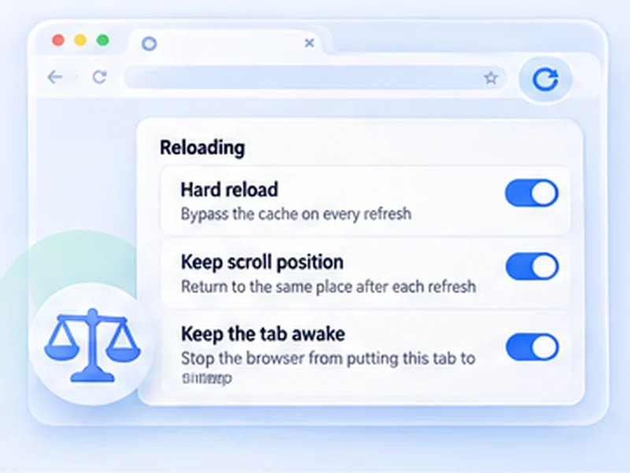

A free alternative to Easy Auto Refresh.
Easy Auto Refresh is a long-standing refresh extension with a free tier and paid extras. Free Auto Refresh covers the everyday features without a licence. Here is an honest comparison.

The short version
Both extensions reload a tab on a timer. The difference is what you get without paying. Easy Auto Refresh lists several features, including random intervals and text-found notifications, as available after registering a paid copy. In Free Auto Refresh those are free.
Easy Auto Refresh also does things this extension does not, such as clicking elements and working through a list of URLs. If you need those, it is the better choice.
Switching in a minute
Install Free Auto Refresh
It can sit alongside your current extension.
Stop the old timer on the tab
Two extensions refreshing the same tab will fight each other.
Set your interval and press Start
Use the same seconds you used before.
Feature comparison
This is based on each extension's public store listing at the time of writing. Check the current listing before you decide, as features and pricing change.
- Fixed interval refresh: both, free.
- Random intervals: free here. Listed as a registered feature in Easy Auto Refresh.
- Notification when text is found: free here (desktop notification and flashing title, no sound). Listed as a registered feature there, with sound.
- Bypass cache: free here as Hard reload. Listed as a registered feature there.
- Keep scroll position: both, free.
- Pause while typing, clicking or scrolling: here only.
- Auto-click an element, URL lists, refresh at set times of day, reload all tabs: Easy Auto Refresh only (registered features).
Who should use which
Choose Free Auto Refresh if
you want a timer, random intervals and a page change alert at no cost, in a private extension that makes no network requests.
Stay with Easy Auto Refresh if
you rely on automatic clicking, URL rotation or time-of-day schedules. Free Auto Refresh does not offer those.
Privacy and permissions
Free Auto Refresh asks for storage, notifications and access to the pages you refresh. It collects no data, has no account, and its source code is public.
Questions, answered.
Is Free Auto Refresh made by the same people as Easy Auto Refresh?
No. They are separate, unrelated extensions.
Is Easy Auto Refresh free?
It has a free tier. Its store listing describes additional features that require registering a paid copy.
Does Free Auto Refresh have random intervals for free?
Yes. Set different minimum and maximum values.
Can Free Auto Refresh click a button automatically?
No. It reloads and alerts only.
Can I run both extensions?
Yes, but do not start both on the same tab.
Try the free alternative.
Every feature included. No account, no ads, no tracking.
Not seeing the feature you need?
Share the browser task you would like to make easier. Your idea helps guide what gets built next.